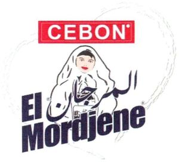

Trade Mark Journal No.2025/025 20 June 2025
WO0000001857852 (29,30,32,35)
Office of origin: Algeria
Date of International Registration:7 November 2024
Date of designation in the UK:
7 November 2024

The mark contains the colours red, dark blue, white, brown, beige and black.
International priority date claimed: 30 September 2024
(Algeria)
(247005)
- Class 29
- Jellies, jams, compotes; eggs; milk, cheese, butter, yogurt and other dairy products; oils and fats for food; vanilla-flavored milk-based beverages; whipped cream; hazelnut spreads; nut-based spreads; spreads based on vegetable oils; jellies, jams, compotes, fruit and vegetable spreads; cream powder; whipped cream; crème fraîche; cream substitutes; prepared pistachios; fruit curds; sour cream; whipping cream; raspberry cream; tangerine cream; butter cream; lemon cream; preparations for making ice cream [dairy products]; cream-based preparations for making frozen yogurt; processed almonds; almond spreads; roasted hazelnuts; fermented dairy products.
- Class 30
- Coffee, tea, cocoa and substitutes thereof; rice, pasta and noodles; tapioca and sago; flour and preparations made from cereals; bread, pastry and confectionery products; chocolate; ice cream, sherbets and other edible ices; sugar, honey, treacle; yeast, baking powder; salt, seasonings, spices, preserved herbs; vinegar, sauces and other condiments; ice for refreshment; semolina; powdered sugar; vanillin [vanilla substitute]; chocolate-based spreads; cookies filled with cocoa and hazelnut cream; frosting [icing]; glazing products for confectionery; glazing products for foodstuffs; starch for food; orange blossom flavorings, other than essential oils, for food or beverages; caramel cream; ice cream substitutes; frozen yogurt [edible ices]; ice for refreshment; fruit ices; confectionery ices; ice milk; chocolate-based spreads also containing nuts; baking-powder; wheat starch; starch for cooking; starch vermicelli; corn starch; invert sugar; chocolate bars; chocolate candy; powdered chocolate; dark chocolate; caramel syrup; pancake syrup; chocolate syrups; topping syrups; filled chocolates; chocolate confectionery; chocolate cupcakes; chocolate desserts; chocolate fondue; chocolate creams; chocolate mousses; pains au chocolat; chocolate chips; chocolate sauces; chocolate pastries; chocolate tablets; chocolate truffles; chocolate snack bars; milk chocolate bars; biscotti dough; frozen biscotti dough; rusks; toast [crisp bread]; pastilles [confectionery]; unroasted cocoa beans.
- Class 32
- Beverages without alcohol; mineral and aerated waters; beverages based on fruit and fruit juices; syrups and other non-alcoholic preparations for making beverages; non-alcoholic chocolate-flavored beverages; almond syrups; fruit syrups; syrups for beverages; sports beverages and energy drinks.
- Class 35
- Advertising; commercial business administration, organization and management; office functions; wholesale services in relation to chocolate; retail and wholesale services in relation to chocolate.
SARL CEBON
Representative: Mr Ameyar Walid, Cité 142 Logts Bloc 14A, Draria, Alger, ALGERIA